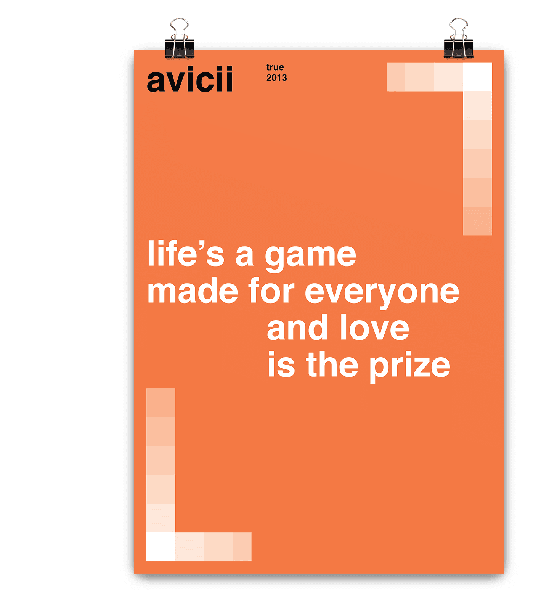

AVICII
Poster
_01

_avicii - true swiss poster.
5 / 5
AboutSwiss Posters is a graphic design project based on Swiss Modernism created by the artist and designer Mike Joyce where he designs, almost with a single element which is the "Akzidenz-Grotesk Medium" typeface plus geometrics figures. The objective of this project was to apply the Swiss Modernism movement, and one typeface to design music posters for the famous techno-music album "True by Dj AVICII".
_avicii - true swiss poster.
_avicii - true swiss poster.
_avicii - true swiss poster.